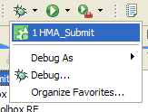
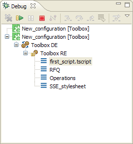
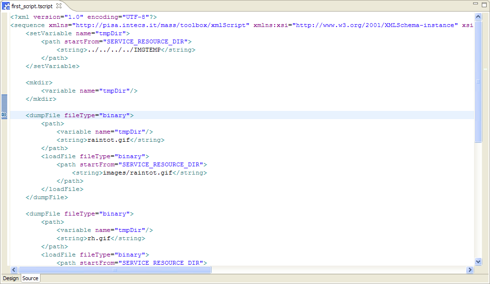
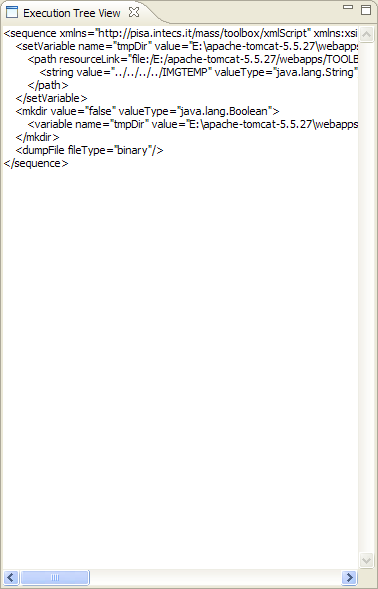

A service can be debugged directly on the TOOLBOX RE in order to check its behaviour on a real environment. In order to do this a service must be deployed on the TOOLBOX RE (see here) and a launch configuration must be create (see here). Once performed these steps the user have to start an execution selecting the launch configuration from the debug menu, as shown below.

The debug session is started and interrupted as soon as a breakpoint is hit. See here to know how to add a breakpoint.
When a breakpoint is hit the debug view is refreshed updating the following view parts:
The variables view is updated in order to list all variables stored into the Toolbox engine at the stop time with their value. The following picture shown the concept.
Through this view it is possible to take a look and change (see here) all variable's value.
The debug view shows the current execution stop point. It shows, in a stack like visualization, the file where the hitten breakpoint is placed. The pitcture below shows this concept.

In this image the execution is stopped inside the first_script.tscript file associated to the RFQ operation of the SSE_stylesheet service project. The breakpoint hit and hits line in the script file is shown by the script view. The picture below shows an example where the breakpoint is highlighted in order to remark the exact stop point. Each time the execution is stopped to a breakpoint it is done before executing the tag. This means that in the case described by the picture below, the execution is stopped before executing the tag <dumpFile>.

All these functionalities let the user investigate the execution of a script having a snapshot of engine when it hit a breakpoint. The Execution tree view let the user have a dynamic view of the execution flow, displaying the execution tree associated to the script.

As the picture above shows the execution tree displays all executed tags together with their value at the moment they were processed. If one variable has been used and changed several times it will be possible to see its value change in time. This execution tree is the same that is dumped to disk by the Toolbox Runtime Environment and made available to the user through the monitoring center functionalities (see here and here).